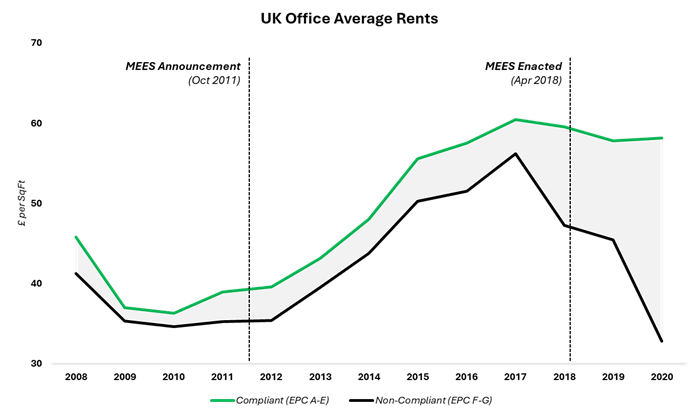

Research Review: Cambridge Quantifies the Green Premium on Office Rents
Tightening Energy Regulations Are Repricing Office Markets
Energy efficiency is no longer just a sustainability benchmark, it’s a key asset valuation driver. A 2024 study from the University of Cambridge provides new, data-backed evidence that office buildings with stronger Energy Performance Certificate (EPC) ratings command a green premium, while inefficient properties face relative declines [1].
Using over 100,000 lease comparables and EPC data from Radius Data Exchange (formerly known as EGi - Estates Gazette Interactive), the UK EPC Register, and CoStar UK, the study authors reveal how the market pre-emptively prices-in energy efficiency risks ahead of regulations. This has major implications not just for the UK, where Minimum Energy Efficiency Standards (MEES) are already reshaping the office sector, but also across the EU, where minimum EPC standards are planned to tighten by 2027.
MEES & Market Impact: What the Study Reveals
The UK’s MEES policy introduced in 2018, initially prohibited new leasing of commercial buildings with an EPC rating below E. Following the study period (2008–2020), in 2023 MEES regulations have now further expanded to cover all continuing leases, further accelerating market repricing across the asset class.
This study’s latest findings, based on one of the most comprehensive datasets of UK office rents, quantify the impact:
- Clear Green Rental Premium and a Penalty for Inefficiency: EPC F-G rated properties saw rental declines of 6-8%, with declines starting in advance of MEES coming into force. Even E-rated buildings, not yet directly affected, experienced a 4.4% discount, as the market anticipated stricter policies. Higher-rated assets (EPC A / B) demonstrated rental resilience, with some evidence of a green premium as occupiers prioritized energy efficiency.

- Investors Price in Regulatory Risk Well in Advance: The study found that market repricing began years before regulations changed, confirming that investors need to factor in policy risk long before enforcement deadlines. This aligns with CRREM transition risk models, reinforcing that delaying energy efficiency improvements leads to financial losses and liquidity risks.
- Implications for the EU Market: While these insights are drawn from the UK, the findings are highly relevant for EU office markets, where tightening EPC regulations will soon impact investment strategies. The European Commission’s January 2025 revision of the Energy Performance of Buildings Directive (EPBD) mandating a minimum EPC of F by 2027 and E by 2030.
The UK’s MEES experience offers a predictive case study for EU markets now preparing for similar EPC-based regulations.
Strategic Takeaways: How to Stay Ahead of Policy-Driven Risks
The study underscores the urgent reality that policy-driven decarbonization is accelerating and failing to act now could lead to asset repricing and stranding.
- Anticipate Regulation Before It’s Enforced: Investors in both the UK and EU should assume that energy efficiency will increasingly dictate asset value. The study confirms that MEES-driven rental shifts began years before formal enforcement, where declines notably started in 2017 ahead of full implementation for all commercial leases in April 2023. The same is likely to be seen for upcoming EPC requirements across the EU (F by 2027, E by 2030).
- Transition Risk = Financial Risk: Delaying energy efficiency upgrades ultimately leads to higher retrofit costs, reduced liquidity, and potential regulatory stranding and declines. Aligning asset strategies with optimized transition pathways allows landlords to sequence retrofits efficiently while minimizing capital expenditure risk, and maintaining commercial viability.
- Data is the Competitive Advantage: The research highlights that granular leasing and EPC data is critical for investment strategy. Investors who integrate high-quality compliance and energy efficiency data into their underwriting will be best positioned for long-term value preservation. Asset managers who proactively consider energy performance and implement transition plans can minimize the risk of asset stranding.
The Future of CRE is Regulation-Ready
The findings confirm what many investors already suspect: the green premium is real, and the cost of inefficiency is growing. The UK’s MEES regulations provide an early case study of how policy-driven decarbonization impacts asset values, offering a warning for wider European markets facing their own tightening standards.
With increasingly stringent energy efficiency regulations across both the UK and EU, the question for investors is no longer if regulation will impact asset values it’s when and by how much. Those who proactively integrate regulatory foresight into their strategies will protect value and unlock competitive advantages. Those who don’t risk falling behind.
The future of commercial real estate is data-driven, regulation-ready, and built for resilience. Investors who integrate regulatory foresight into their strategies today won’t just preserve value they’ll lead the repricing cycle.
- Akhtyrska, Yana & Fuerst, Franz. "The effectiveness of climate change regulations in the commercial real estate market". Energy Policy. 2024 ↩